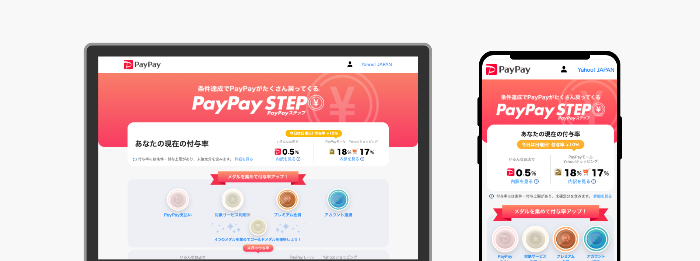
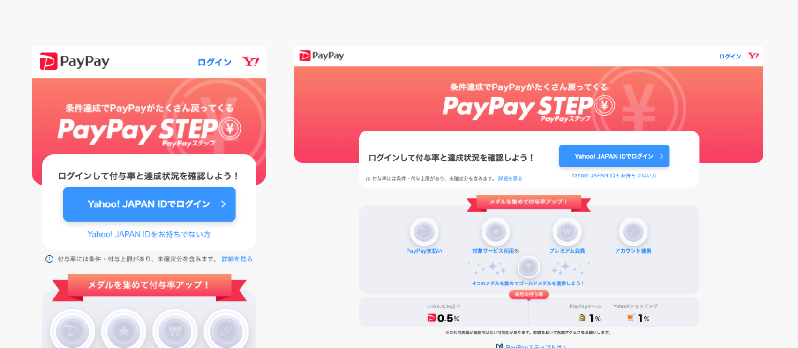
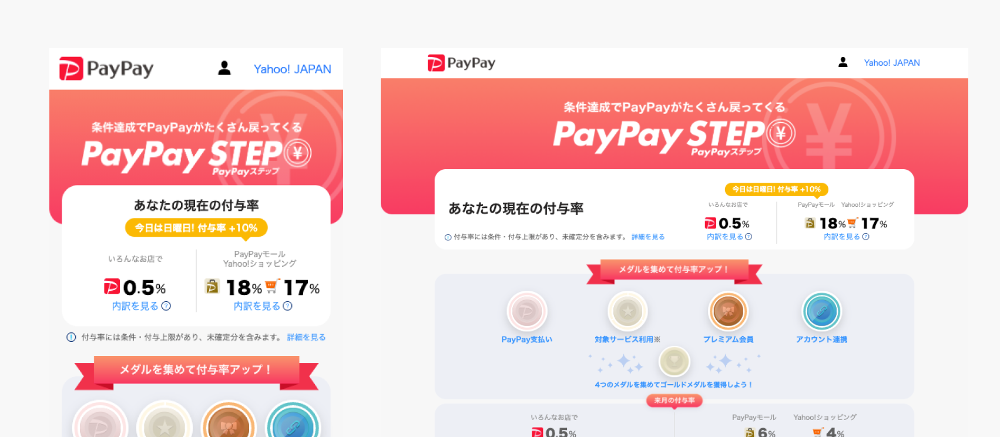

自社コマースサービスの利用促進を目的とした新規サービス「PayPay STEP」の立ち上げからリリースに向けて、企画・エンジニアと連携してフロント実装を担当。ユーザーの利用状況や達成条件に応じた動的な構成出し分け画面の構築や、開発・運用の持続性を高めるドキュメント整備を行いました。
リリースの推進にとどまらず、リリース後の改善やコードリファクタリング、保守運用の仕組み化まで一貫して対応しました。
ユーザーのログイン状態や条件達成度に応じて見せるコンテンツやデザイン構成を柔軟に制御。マルチデバイスでの閲覧性を担保するレスポンシブ設計を行いました。
【未ログイン時画面】

【ログイン時画面】

Vue.js / Nuxt.jsでの実装において、Atomic Designの思考を取り入れて設計。再利用可能なコンポーネント群を定義することで、新規ページ作成や運用時の変更対応を大幅に効率化させました。
ロジックを含む複雑なサービス画面において、単なる見た目のコーディングにとどまらず、状態変化や出し分け条件を意識したコンポーネント構造・ルール策定の重要性を体感しました。
デザインとフロントエンド開発の両方の視点を強みとし、エンジニアと密にコミュニケーションを取りながら拡張性の高いWebプロダクトの構築に貢献していきます。